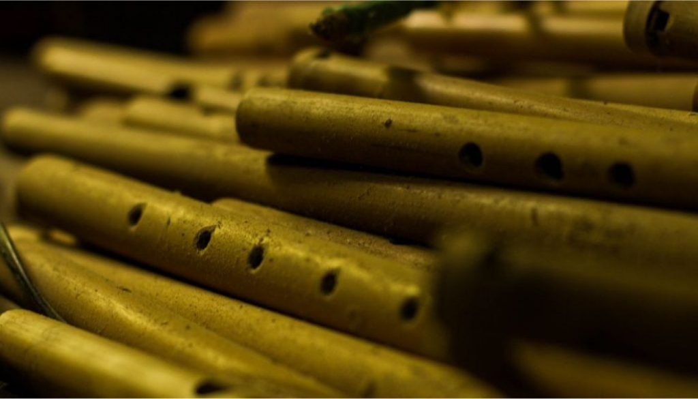

1. Suling Sunda
Suling merupakan salah satu jenis kesenian di dunia. Suling menjadi ciri khas dan mendarah daging dengan alunan yang indah dan penuh makna. Suling merupakan komponen terpenting dalam hidup. Siapapun dapat terpesona dan menjadi tenang khususnya pemain dan pendengarnya.
Sunda merupakan salah satu suku terbesar di dunia. Semua tersebar mulai dari dari Jawa Barat, Indonesia bahkan dunia. Sunda memiliki banyak keanekaragaman warisan. Warisan yang terjaga berabad-abad membuktikan bahwa suku sunda masih ada dan tidak lenyap dalam kehidupan.
Sunda memiliki warisan kesenian, salah satunya suling sunda. Suling sunda terbuat dari batang pohon bambu yang dilubangi. Lubang tersebut secara umum terdiri dari dua pilihan yakni suling dengan 4 lubang dan suling dengan 6 lubang di tambah 1 di bagian bawahnya. Suling terdengar syahdu bagi para pendengarnya.
Jaman sekarang, kesenian suling sunda kurang diminati termasuk oleh pemuda sunda. Pemuda sunda sudah disibukkan dengan hiburan-hiburan yang jutru mengikis budaya sendiri. Seperti halnya budaya Jepang, Barat, Korea Selatan dll. Suling sebagai jati diri manusia sunda. Dengan mempelajarinya dan terampil menjadikan sunda tetap ada dan semoga dengan hadirnya website PSS tergugah, dan semangat mempertahankan warisan yakni Suling Sunda